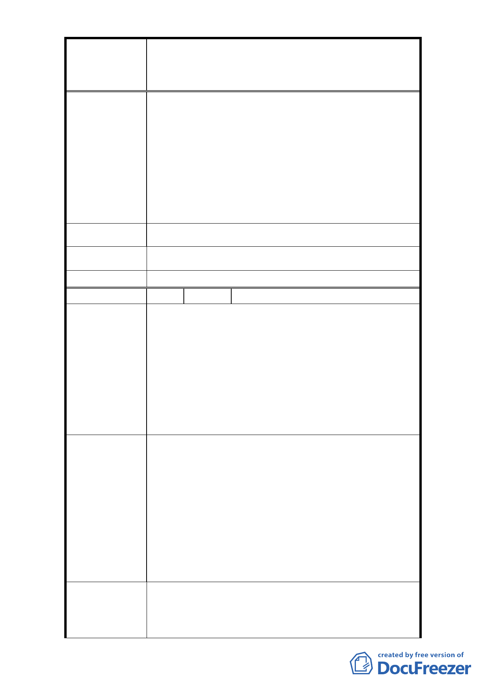

修訂臺北市大安區青田街保存區聚落風貌保存專用區細部計
案
名
畫、變更部分第三種住宅區、第三種商業區(特)為第三種住宅區
(特)(日式宿舍)及第三種商業區(特)(日式宿舍)暨劃定週邊地
區都市設計管制細部計畫案
基地，本區既有道路及公共設施將無法負荷額外容
積，且過多容積將破壞本區天際線，影響日照危害
樹木植栽。
3. 土地使用計劃及分區管制-不適用室內停車空間鼓
勵且不得作為容積接受基地，以免破壞本區居住環
境品質。
4. 為避免本區過度開發反對室內停車空間鼓勵要點規
定且反對作為容積接受基地。
建 議 辦 法 維持原計劃。
市 府 回 覆 意 見 同編號 1 回覆內容。
委 員 會 決 議 同編號 1 決議。
編 號 14 陳情人 張文玲、賴陳雪美
1. 本計畫區內位於古蹟或歷史建築所在街廓之私有土
地於開發時可與該街廓外之第三種住宅區………交
換土地或採更新方式將本計畫區內日式建築中於古
蹟或歷史建築所在街廓。
陳 情 理 由 2. 建蔽率:因古蹟限建取消停獎及容積移轉，即使現在
還原住 3 作業程序也趕不及（停獎於 102 年 12 月 31
日取消）。
3. 開挖率:教會百分之百開挖（斜對面已興建之教會）。
1. 因計畫內容並無明訂若在古蹟或歷史建物所在街廓
之私有土地若開發遇限制無法更新，該如何申請交
換土地或都市更新（例：交換土地是否可選擇？該
向何單位申請，希望可部份所有權人單獨選擇。日
建 議 辦 法 式宿舍部份請明訂有哪些基地可與私地交換，並獲
得這些基地所有權人同意之同意書，請明訂交換細
則）。
2. 放寬容積率 20%。提高建蔽率。
3. 比照教會辦法處理 100%為主。
1. 為兼顧文化資產保存及土地開發權益，已將本計畫
區分三層級管制開挖率。
市 府 回 覆 意 見 2. 土地交換申請或都市更新目前均已有法令規範，無
涉新計畫修訂內容。
- 16 -